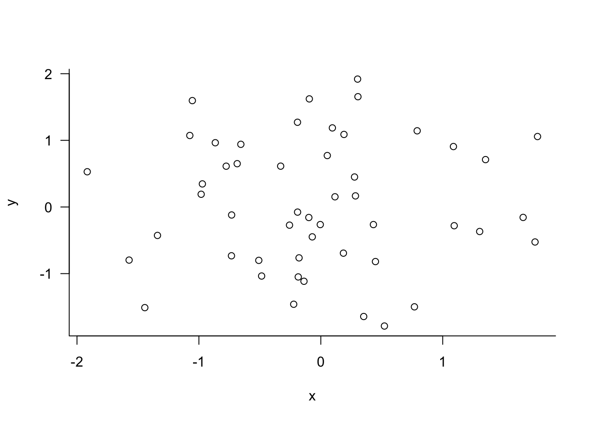
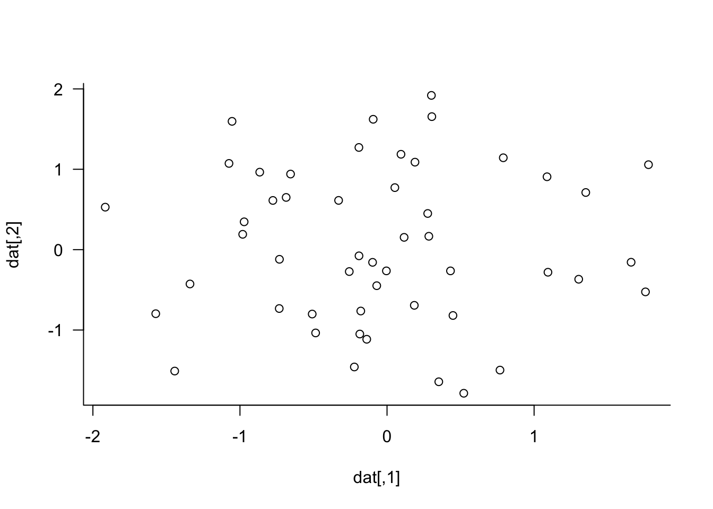
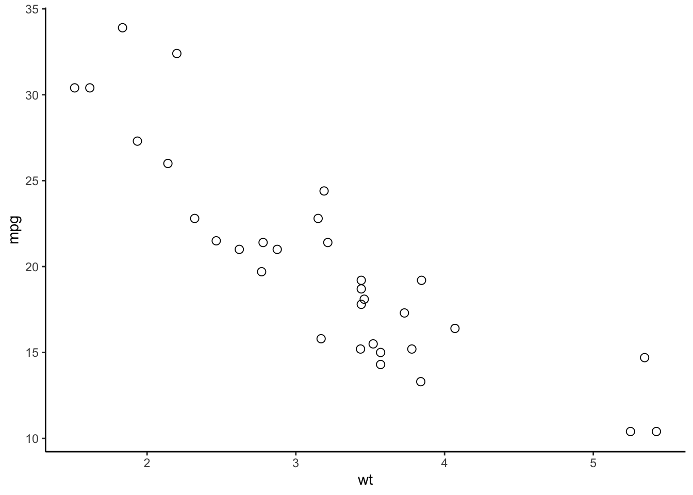
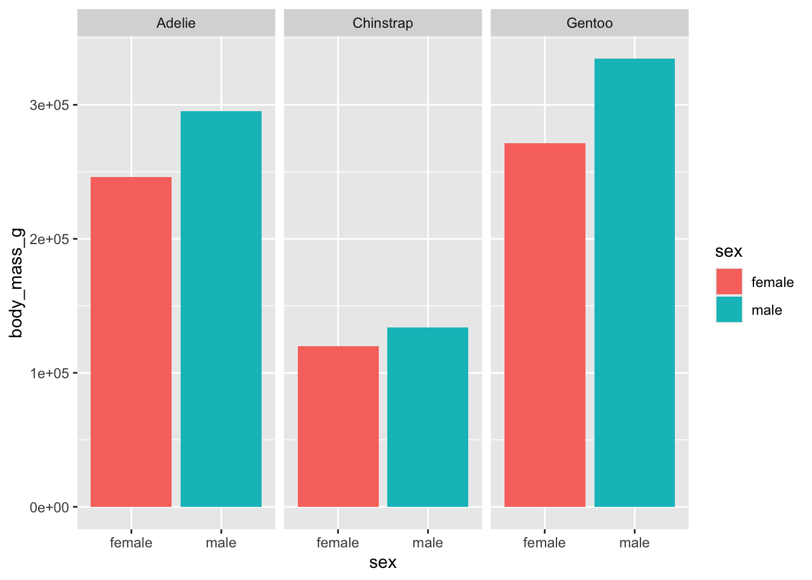
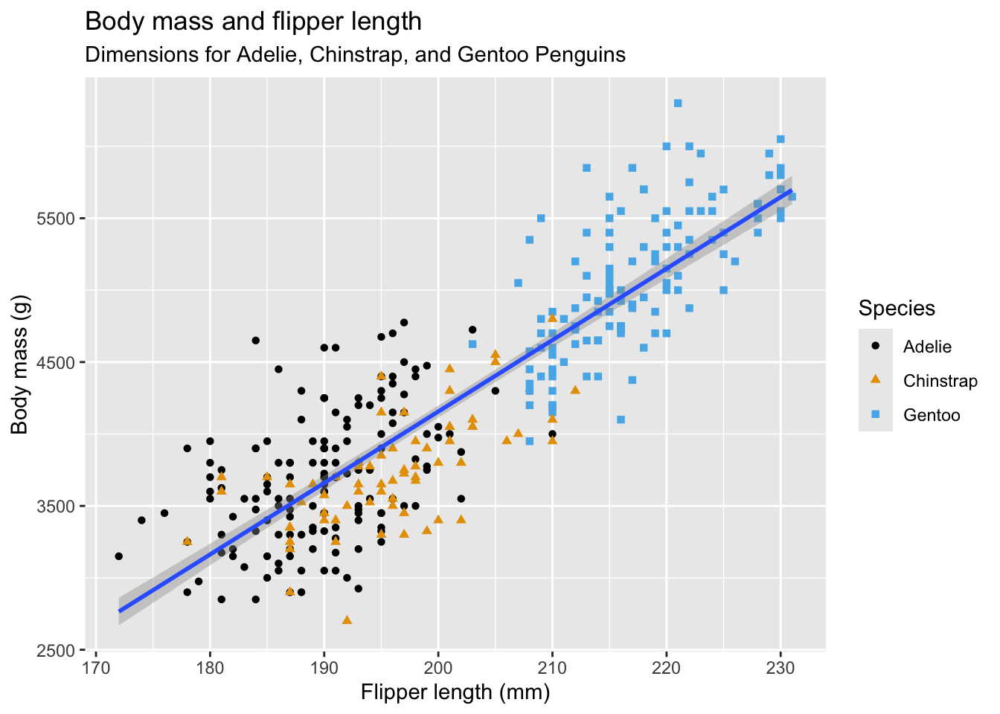
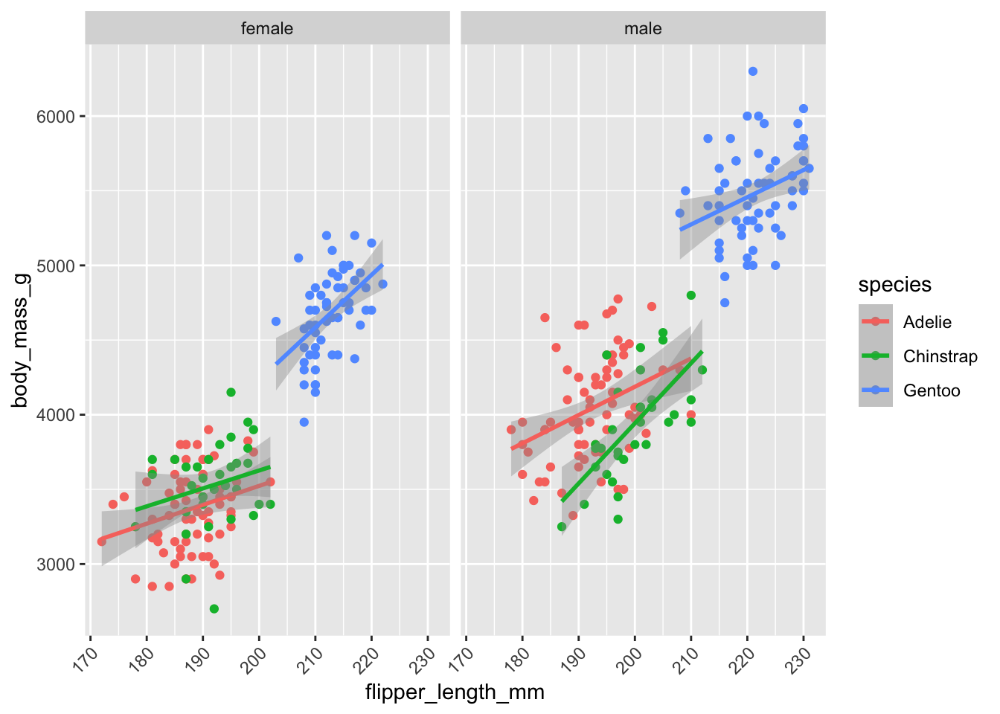
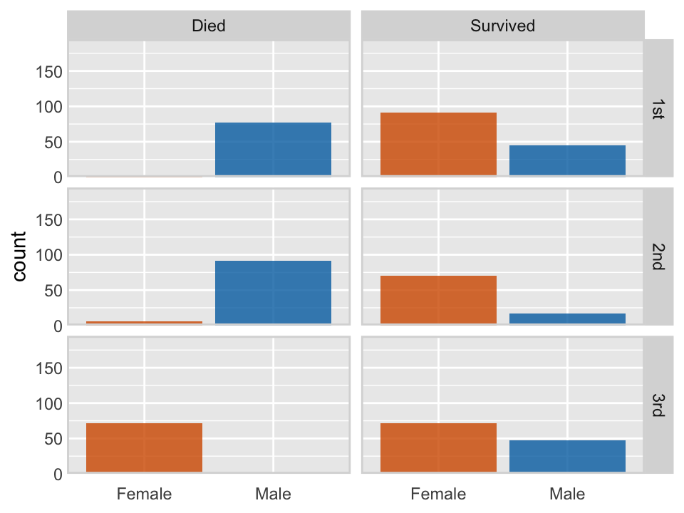
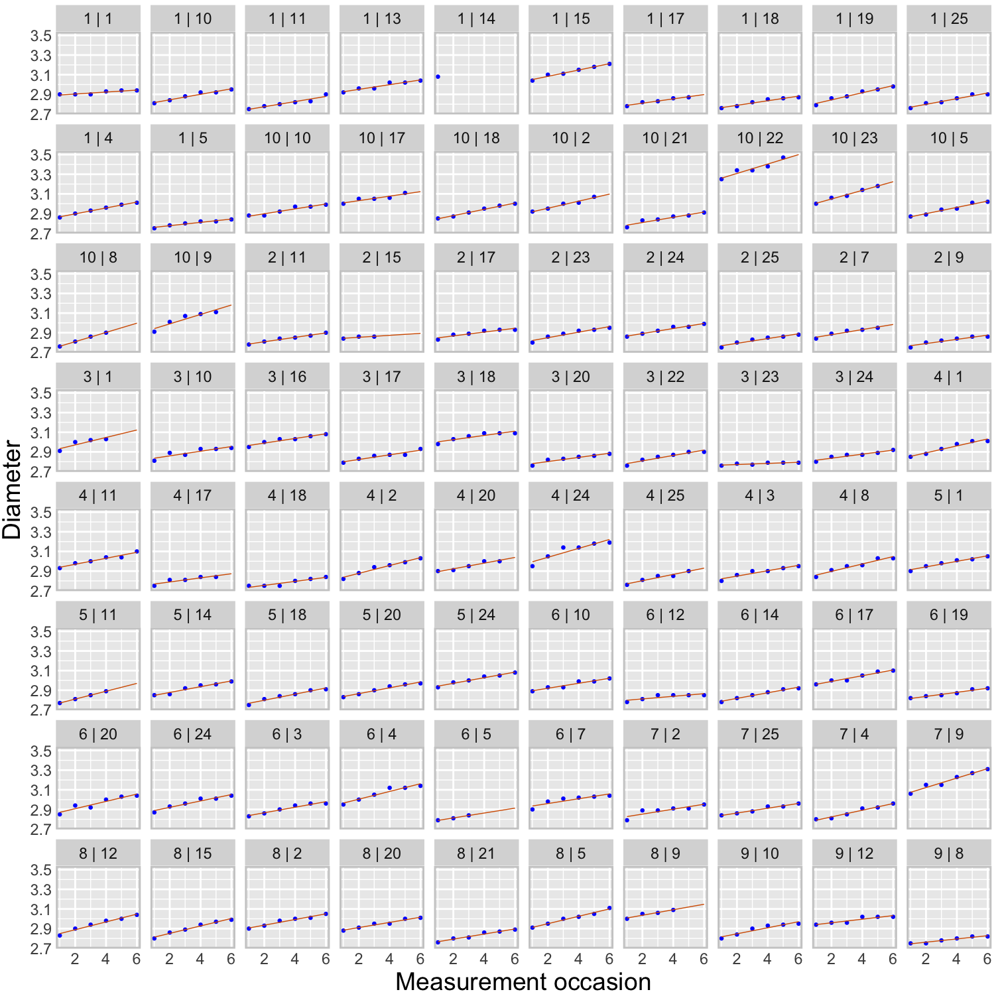
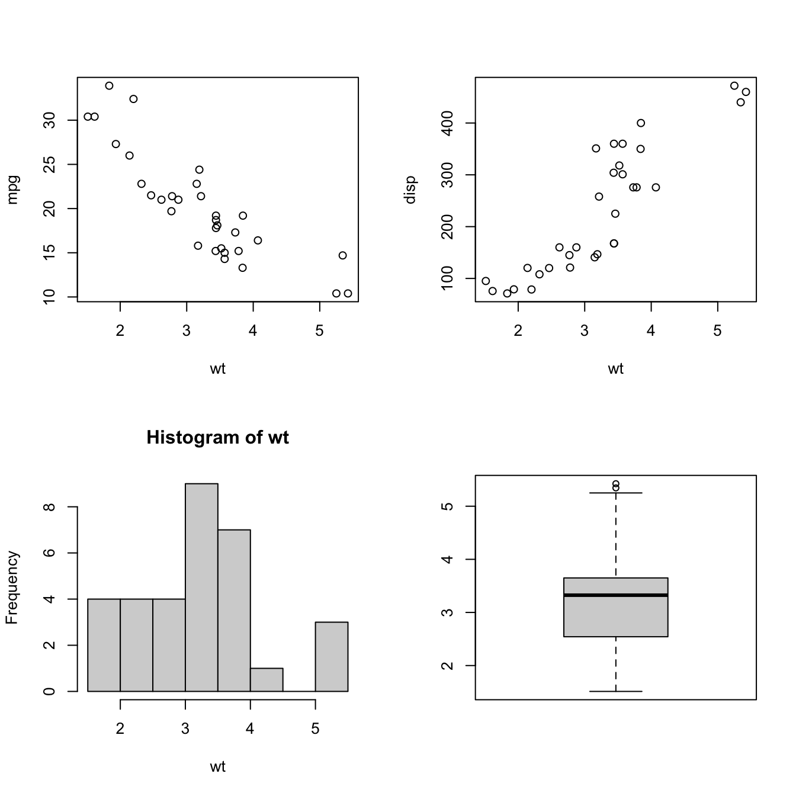
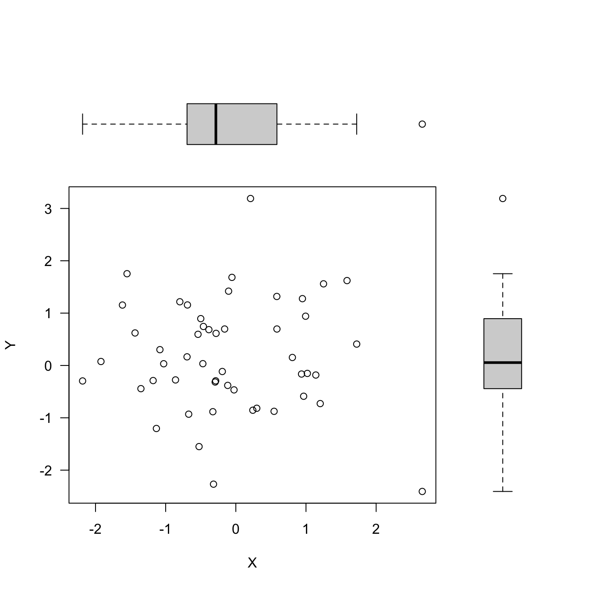

{kind=link}
library(help="graphics")6 Visualization
6.1 Introduction
The purpose of data visualization is to communicate quantitative and qualitative data in an accurate and easily understandable way. It is used to convey information without distracting from it. It should be useful, appealing and never misleading. Like data summarization, visualization is a means of reducing a large amount of information to the essential elements.
Gelman and Unwin (2013) list these basic goals of data visualization:
- Discovery
- Give an overview—a qualitative sense of what is in a data set.
- Convey scale and complexity—a network graph does not reveal the underlying structure but gives a sense of the size and connectivity in the network.
- **Exploration*—discover unexpected aspects of the data.
- Communication
- Tell a story—to self and others by displaying information in an understandable way. “If we communicate well, we call it storytelling”.
- Attract attention and stimulate interest—graphs are grabby.
Tukey (1993) summarized the purpose of graphical displays in four statements:
1. Graphics are for the qualitative/descriptive–conceivably the semiquantitative–never for the carefully quantitative (tables do that better).
2. Graphics are for comparison–comparison of one kind or another–not for access to individual amounts.
3. Graphics are for impact–interocular impact if possible, swinging-finger impact if that is the best one can do, or impact for the unexpected as a minimum–but almost never for something that has to be worked at hard to be perceived.
4. Finally, graphics should report the results of careful data analysis-rather than be an attempt to replace it.
The graphic must allow us to compare things, it is not about revealing actual values. The mean or median can be represented as a reference line, as in the boxplot, but you do not need to show the actual value of the mean or median. It exists on the graphic through its relation to other graphical elements. By the same token Tukey argues that you should not have to display the scale of the horizontal or vertical axis unless that is needed for the interpretation; for example when plotting on a log scale.
You can always add labels that show the values being graphed, but overdoing that turns a graphic into an elaborate tabular display. If that is necessary, then maybe a table is a better way to present the information. The interocular impact Tukey is talking about in 3. is the information that hits the viewer “right between the eyes”.
About Tukey’s fourth point, Gelman and Unwin write
To put it another way, a picture may be worth a thousand words, but a picture plus 1000 words is more valuable than two pictures or 2000 words.
Consider this example from their paper (Figure 6.1)
At the start of the 20th century, ten last letters dominated boys’ names, by 1950 that had reduced to six letters. By 2010, the letter “n” stands out; about 1/3 of boys’ names in the U.S. end in “n”! That is interocular impact, it stands out. Is this a spurious effect? What could cause this? What does it mean? Gelman and Unwin, consulting with the authors of the graphic, provide this explanation. Over time, parents felt less constrained in choosing baby names, whereas a hundred years ago they choose from a small set of common names, often picking names of male relatives. Surprisingly, the greater freedom in choosing names nowadays results in selecting soundalikes (Aiden, Caden, Hayden, etc.) resulting in clustering in the last letter. Gelman and Unwin conclude
Nowadays the distribution of names is more diffuse but the distribution of sounds is more concentrated.
Exploratory and Presentation Graphics
Gelman and Unwin (2013) discuss the difference between information visualization, the use of graphics to convey information outside of statistics, and statistical graphics, the use of visualization to convey information in data. Infographics, the result of information visualization, grab your attention and get you thinking. Statistical graphics facilitate a deeper understanding of the data. The two should be related—the information visualized in an Infographic is very often data, and statistical graphics are often not as catchy and beautiful as professional visualizations. There is a good reason for that, and it depends on whether you create graphics in exploratory mode or in presentation mode. What makes a good graphic depends on the mode.
Exploratory mode
During exploratory work you are trying to get insight into the data. Graphing is about producing a large number of graphics for an audience of one—yourself. Speed, flexibility, and alternative views of the data are of the essence. You do not need to grab your own attention; you already have it. You do not need to provide a lot of context; you already know it. Characteristics of good data visualization in exploratory mode are
- Simple to create
- Multiple views of the data
- Makes you think and curious about digging deeper, stimulates self-interest
- Less is more; shows only what it needs to
- Enough detail to give insight
Think of thousands of graphs viewed by one person—yourself.
Presentation mode
In presentation mode you work on a small number of graphics that are viewed by a much larger audience. The audience is not yourself. You do not have the attention of the audience yet and need to grab it. The audience also does not have full context yet and should be able to construct it from the graphic (and maybe a few other pieces of information). The presentation graphic will have elements such as legends, labels, annotations, and captions that help convey the context.
Characteristics of a good data visualization in presentation mode are
- Grabs attention and draws the reader in; wow factor
- Shows only what it needs to
- A single view; is self-contained
- Tell a story
- Provides context through the visualization itself (legend, caption)
Think of thousands of persons viewing one graph—produced by yourself.
Notice that in both modes graphics should display only what they need to. Avoid excessive annotations, colors, labels, grid lines—the stuff Tufte (1983) and Tufte (2001) refers to as chartjunk. However, what is needed depends on the purpose of the graphic. While less is always more, presentation graphics are more self contained and need to provide information and context that you already have in exploration mode.
6.2 Basic Graphics in R
A wide variety of plotting functions come with the base graphics package. To see all functions in that library, check out the following command:
For statistical programming, the most important plotting functions are
plot: generic function for plotting of R objectssmoothScatter: smoothed color density representation of a scatterplotpairs: matrix of scatter plotshist: histogram of the given data valuesacf: computes (and by default plots) estimates of the autocorrelation functionboxplot: box-and-whisker plot(s) of the given (grouped) valuesbarplot: bar plot with vertical or horizontal barsdotchart: Cleveland’s dot plotpie: draw a pie chartstars: star (segment) plots and spider (radar) plotscontour: contour plot, or add contour lines to an existing plotimage: grid of colored or gray-scale rectangles with colors corresponding to the values in z
plot is both the generic scatterplot function and a generic plotting function for other R objects. For example, when passed an output object from lm, plot produces a variety of regression diagnostic plots:
reg <- lm(mpg ~ cyl + disp + hp, data=mtcars)
plot(reg){kind=link}
{kind=link}
{kind=link}
{kind=link}
Other graphic functions support the previous
lines: A generic function taking coordinates and joining the corresponding points with line segmentsablines: This function adds one or more straight lines through the current plotpoints: draws a sequence of points at the specified coordinatespanel.smooth: simple panel plotpolygon: polygon draws the polygons whose vertices are given in x and ysymbols: this function draws symbols on a plotarrows: add arrows to a plotaxis: add an axis to a plotlegend: add a legend to a plotmtext: writes text into the margin of a plottext: adds text (one or a vector of labels) to a plottitle: add titles (main, sub) and labels (xlab, ylab) to a plot
The behavior of the graphics functions can be modified with parameters. There are two ways to pass parameters to a plot: specify it as part of the function call, or use the generic par function.
set.seed(543)
dat <- matrix(rnorm(100),nrow=50,ncol=2)
plot(dat, las=1, bty="l", xlab="x", ylab="y")
par(las=1, bty="l")
plot(dat)
xlab= and ylab= are not graphical parameters, they are passed in the plot function. las= and bty= are graphical parameter that determine the style of axis labels and the boundary box of the plot. These parameters can also be passed in the par function. Check the documentation for parameters that are set or queried with par.
6.3 Grammar of Graphics
The grammar of graphics was described by statistician Leland Wilkinson and conceptualizes data visualization as a series of layers, in an analogy with linguistic grammar (Figure 6.2). Just like a sentence has subject and predicates, a scientific graph has parts.
The grammar of graphics is helpful because we associate data visualization not by the name of this plot or that chart type, but by a series of elements, depicted as layers.
Each graphic consists of at least the following layers:
The data itself; the first layer in Figure 6.2
The mappings from data attributes to perceptible qualities; the aesthetics layer
The geometrical objects that represent the data; the geometries layer
In addition, we might apply statistical transformations of the data, must place all objects in a 2-dimensional space and decide on presentation elements such as fonts and colors. And if the data consist of multiple groups, we need a faceting specification to organize the graphic or the page in multiple groups.
{kind=link}
Thinking about data visualization in these terms is helpful because we get away from thinking about pie charts and box plots and line charts, and instead about how to organize the basic elements of a visualization.
Grammar of graphics principles are implemented in the ggplot2 library in R. ggplot2 is part of the tidyverse collection of packages, like dplyr. Layers are added in ggplot2 by adding them (literally, with a + operation) to an existing plot. This can be combined with the piping in tidyverse. The following code produces two scatter plots from the mtcars data. The aesthetic specifies the columns for the x-axis and y-axis (aes), geom_point specifies the geometry consists of the points of the data values. The second ggplot call modifies the point size and shape within the geometry and changes the overall theme of appearance. The facets, statistics, and coordinates layers are not used in these plots.
library(ggplot2)
library(dplyr)
mtcars %>%
ggplot(aes(y=mpg,x=wt)) +
geom_point()
mtcars %>%
ggplot(aes(y=mpg,x=wt)) +
geom_point(size=2.5, shape=21) +
theme_classic()

Caution
A common mistake with ggplot is to put the + at the beginning of the line; it has to appear at the end of the line. Forgetting this can drive novice users insane, why would this code fail
mtcars %>%
ggplot(aes(y=mpg,x=wt))
+ geom_point()but this code works
mtcars %>%
ggplot(aes(y=mpg,x=wt)) +
geom_point()Check the error message from ggplot in the first case. It contains the line
Did you accidentally put
+on a new line?
The next example uses filter and select functions from dplyr to subset rows and columns of the penguin data set. This data set can be added to your R installation with
install.packages("palmerpenguins")geom_col is one of two geometries for bar charts. geom_bar makes the height of the bars proportional to the number of cases in each group, geom_bar draws the bars according to the values in the data.
Two aesthetic mappings are used. The first in the ggplot command specifies the columns from which the graph is constructed. The aesthetic in the geom_col geometry specifies that the sex variable is mapped to create the fill for the bars. Finally, facet_wrap uses the formula specification to group the bar charts by penguin species—this is an example of a paneled graph (Section 6.4).
library(palmerpenguins)
penguins %>%
filter(!is.na(sex)) %>%
select(sex,body_mass_g, species) %>%
ggplot(aes(x=sex, y=body_mass_g)) +
geom_col(aes(fill=sex)) +
facet_wrap(~ species)
For many examples on using ggplot2 in R consult the R Graphics Cookbook or the Data Visualization chapter in R for Data Science (Wickham, Cetinkaya-Rundel, and Grolemund 2023). For example, Wickham, Cetinkaya-Rundel, and Grolemund (2023) walk you step by step through the process of creating Figure 6.3 layer by layer.

Spoiler alert: here is the final code:
library(ggthemes)
ggplot(
data = penguins,
aes(x = flipper_length_mm, y = body_mass_g)
) +
geom_point(aes(color = species, shape = species)) +
geom_smooth(method = "lm") +
labs(
title ="Body mass and flipper length",
subtitle="Dimensions for Adelie, Chinstrap, and Gentoo Penguins",
x ="Flipper length (mm)",
y ="Body mass (g)",
color ="Species",
shape ="Species"
) +
scale_color_colorblind()6.4 Multipanel Plots
Multipanel plots, as the name suggests, arrange multiple plots in an overall visualization, the space allocated to an individual plot is called a panel.
Figure 6.4 is an example of a two-panel plot with separate panels for male and female penguins that shows separate regressions with confidence intervals for each species and sex combination. The facet_wrap function accomplishes the grouping of the data by sex and the paneling.
penguins %>%
filter(!is.na(sex)) %>%
select(sex,body_mass_g, species, flipper_length_mm) %>%
ggplot(aes(x=flipper_length_mm, y=body_mass_g, color=species)) +
geom_point() +
geom_smooth(method="lm", se=TRUE) +
facet_wrap(~ sex) +
theme(axis.text.x = element_text(angle=45,hjust=1))

In general, we distinguish two types of multipanel plots. In trellis (also called lattice) plots, the panels are defined by grouping variables. The panels created with facet_wrap in the previous plots are ggplot examples of how to do that. These plots are also called conditional graphics as each panel is conditioned on certain values of the data. Furthermore, the basic plot elements in the panels are the same; scatterplots with smoothing lines, for example.
Compound graphics on the other hand, display different plot types in the panels and the data are typically not conditioned in the sense that different panels show different subsets of the data. Rather, the multiple panels display different aspects of the same data.
A big difference between conditional plots and compound graphics is that the software manages the panels for you in the first case and that you have to manage and populate the panels in the second case.
Conditional Plots
You can produce conditional plots in R in two ways: using conditioning capabilities built into a graphics package or using a graphics package built specifically for conditioning. ggplot follows the first model. You can construct any basic visualization following graphics of grammar rules. In the Facets layer you decide how to divide the data into groups (the conditioning) and assign groups to panels. The lattice package follows the second approach. It has specific functions for conditioning and paneling specific plot types. For example, lattice::xyplot produces paneled scatterplots, lattice::barchart produces conditional bar charts, lattice::bwplot produces conditional boxplots, and so on.
ggplot facets
With ggplot, the facet_wrap and facet_grid functions determine the layout of the panels. facet_wrap creates a sequence of panels while facet_grid uses a row-column layout.
The following code, modified from Wilke (2019), see here, uses the facet_grid paneling capabilities of ggplot to display the survival or death for passengers on the titanic, based on the passengers in the training data, conditioned by gender and passenger class.
library(titanic)
titanic_train %>%
mutate(surv = ifelse(Survived == 0, "Died", "Survived")) %>%
mutate(class = ifelse(Pclass==1,"1st",ifelse(Pclass==2,"2nd","3rd"))) %>%
mutate(sex = ifelse(Sex=='male',"Male","Female")) %>%
ggplot(aes(sex, fill = sex)) +
geom_bar() +
facet_grid(class ~ surv) +
scale_x_discrete(name = NULL) +
scale_y_continuous(limits = c(0, 195), expand = c(0, 0)) +
scale_fill_manual(values = c("#D55E00D0", "#0072B2D0"), guide = "none") +
theme(
axis.line = element_blank(),
axis.ticks.length = grid::unit(0, "pt"),
axis.ticks = element_blank(),
axis.text.x = element_text(margin = margin(7, 0, 0, 0)),
strip.text = element_text(margin = margin(3.5, 3.5, 3.5, 3.5)),
strip.background = element_rect(
fill = "grey85",
color = "grey85",
linetype = 1,
size = 0.25
),
panel.border = element_rect(
color = "grey85",
fill = NA,
linetype = 1,
size = 1.)
)

The data for the following example were collected at the Winchester Agricultural Experiment Station of Virginia Tech and are analyzed in (Schabenberger and Pierce 2001, 466–74). Ten apple trees were randomly selected at the experiment station and 25 apples were randomly chosen on each tree. The data analyzed here comprise the eighty apples in the largest size class, those apples with an initial diameter equal or greater than 2.75 inches. Over a period of 12 weeks diameter measurements of the apples were taken at 2-week intervals. The variables in the data set are
Tree: the tree numberappleid: the number of the apple within the tree. Note that the sameappleidcan appear on multiple trees and only apples in the largest diameter size class appear in the data set.measurement: the index of the measurements. Measurements are taken in two-week intervals, so thatmeasurement=1refers to the state of the apple after 2 weeks andmeasurement=6refers to the state of the apple at the end of the 12-week perioddiameterthe diameter of the apple at the time of measurement
apples <- duckload("apples")
head(apples) Tree appleid measurement diameter
1 1 1 1 2.90
2 1 1 2 2.90
3 1 1 3 2.90
4 1 1 4 2.93
5 1 1 5 2.94
6 1 1 6 2.94Suppose we want to create a large panel plot where each of the eighty apples is in its own panel. This side-by-side comparison allows us to better see the apple-specific growth trends which would get lost if we were to overlay data from all apples in a single plot. But apple IDs are not unique within tree numbers in this data set. To uniquely identify an apple, we have to somehow indicate that nesting. This can be done by combining tree and apple id into a single identifier.
apples %>%
mutate(TreeAppleID = paste(as.character(Tree),"|",as.character(appleid))) %>%
ggplot(aes(y = diameter, x = measurement)) +
geom_point(color = "blue", size = 0.5) +
geom_smooth(formula = y ~ x,
method = 'lm',
se = FALSE,
size = 0.25,
color = '#D55E00',
fullrange = TRUE) +
scale_x_continuous(name="Measurement occasion") +
scale_y_continuous(name="Diameter") +
facet_wrap(~TreeAppleID, ncol = 10) +
theme(axis.title = element_text(size = 14),
axis.ticks = element_blank(),
axis.ticks.length = unit(0, "pt"),
strip.text = element_text(margin = margin(3.5, 3.5, 3.5, 3.5)),
panel.border = element_rect(color = "grey80",
fill = NA,
linetype = 1,
linewidth = 1.
),
plot.margin = margin(3, 5, 3, 1.5)
)
For comparison purposes it is important that the scales of the axes, in particular the y-axis, is the same across all panels. Otherwise it would not be possible to compare growth trajectories between apples.
Trellis plots with lattice
The lattice package has special plotting functions for conditional plot types. For example, xyplot produces paneled scatterplots. The following code displays the apple diameters over time, grouped (conditioned) by tree. The number of apples differs from tree to tree. While the overall growth trajectory over time, the slope of the trends, is similar across trees and apples, there appear to be tree-specific differences in the growth level (the intercept). One of the apples on trees #1, #7, and #10 has a much larger diameter compared to the other apples on those trees; evidence of greater within-tree variability.
The strip= option determines the labeling of the header strip of the panels. The as.table=TRUE option arranges the tree numbers from smallest to largest (try it out without that option) and the layout= option requests a single page of up to 12 panels in 4 rows and 3 columns.
library(lattice)
xyplot(diameter ~ measurement | Tree,
data=apples,
strip = function(...) {
strip.default(...,
strip.names =c(T,T),
strip.levels=c(T,T),
sep=" ")
},
xlab="Measurement index",
ylab="Diameter (inches)",
type=c("p"),
as.table=TRUE,
layout=c(4,3,1)){kind=link}
Compound Graphics
There are two basic ways to arrange the plotting area in R for compound graphics: with par(mfrow=) and with layout.
The two important options to create multipanel plots with par are par(mfrow=) (or par(mfcol=)) and par(fig=). mfrow and mfcol specify the number of panels as a 2-dimensional vector of the form c(num_rows,num_cols). mfrow fills the panels by rows, mfcol fills them by columns.
The following code arranges two scatterplots, a histogram, and a box plot in a 2 x 2 array.
attach(mtcars)
par(mfrow=c(2,2))
plot(wt, mpg)
plot(wt, disp)
hist(wt)
boxplot(wt)
If you want to exercise more control over the size of the panels you can use the par(fig=) option to specify coordinates for the figure region. If you use par(fig=) you do not need to specify mfrow or mfcol. But you need to tell R to create a new plot with new=TRUE so it does not add a visualization to an existing plot.
The following code creates a scatterplot in the center of the graphics area with boxplots for the two variables in the margins. The par(fig=c( )) options specify the coordinates for the individual plots on the graphics area as a vector of the form c(x1, x2, y1, y2).
set.seed(645)
dat <- matrix(rnorm(100),nrow=50,ncol=2)
par(fig=c(0,0.8,0,0.8), new=TRUE)
plot(dat, xlab="X", ylab="Y", las =1)
par(fig=c(0,0.8,0.55,1), new=TRUE)
boxplot(dat[,1], horizontal=TRUE, axes=FALSE)
par(fig=c(0.65,1,0,0.8),new=TRUE)
boxplot(dat[,2], axes=FALSE)
The second approach of controlling the layout of a compound graph in R is to use the layout function. Its first argiment is a matrix that specifies the location of the figures. For example, the matrix \[
\left [\begin{array}{cc} 1 & 1 \\ 2 & 3 \end{array} \right]
\] specifies that there are three plots, with the first occupying the first row of the multipanel plot, and plots 2 and 3 sharing the panels in the second row. The matrix \[
\left [\begin{array}{cc} 2 & 0 \\ 1 & 3 \end{array} \right]
\] specifies that the compound graphic is made up of three graphics. The first plot that is produced will go into the lower left corner of the graph, the second plot goes in the upper left corner, and the third plot goes into the lower right corner. That is the pattern in the following code.
set.seed(6)
x <- rexp(50)
layout(matrix(c(2, 0, 1, 3), nrow=2, ncol=2, byrow=TRUE),
widths =c(3, 1),
heights =c(1, 3),
respect =TRUE)
# Margin specification in terms of lines
# The default is c(5.1, 4.1, 4.1, 2.1)
par(mar=c(5.1, 4.1, 0, 0)) # (bottom, left, top, right)
plot(x, cex=2, pch=20)
par(mar = c(0, 4.1, 0, 0))
hist(x, main="", bty="n", axes=FALSE, ylab="")
par(mar = c(5.1, 0, 0, 0))
boxplot(x, axes=FALSE, bty="n")
The widths and heights options of layout give the relative widths of the columns and rows of the graphics area, respectively. widths=c(3, 1) specifies that the first column is three times as wide as the second column. The par(mar=) calls change the margins of the graph area to allow for the placement of the graphics elements. mar= specifies margins in terms of number of lines.